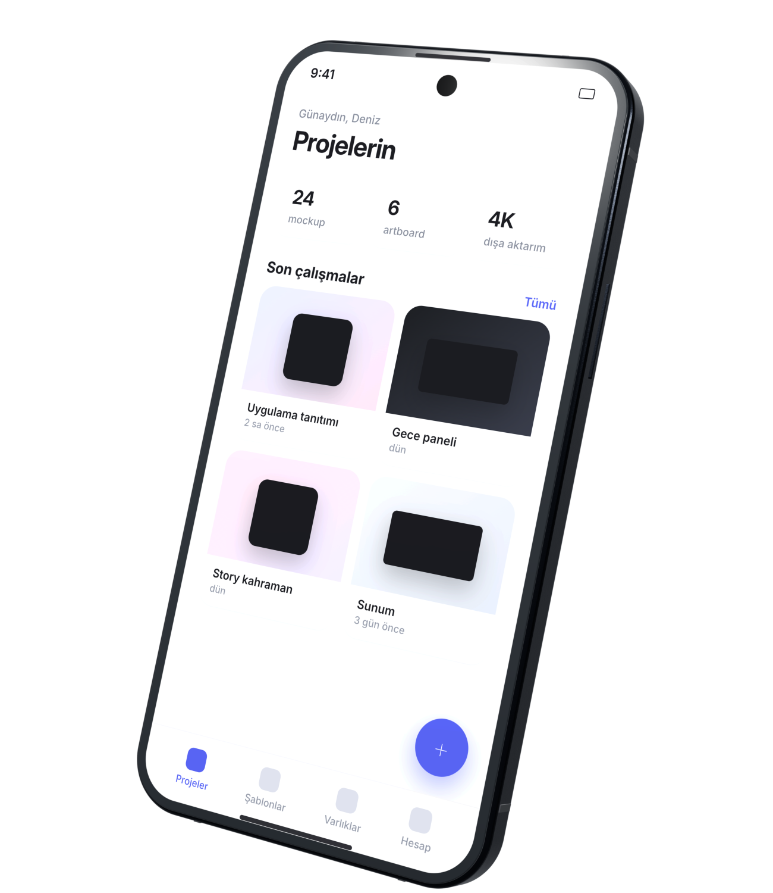
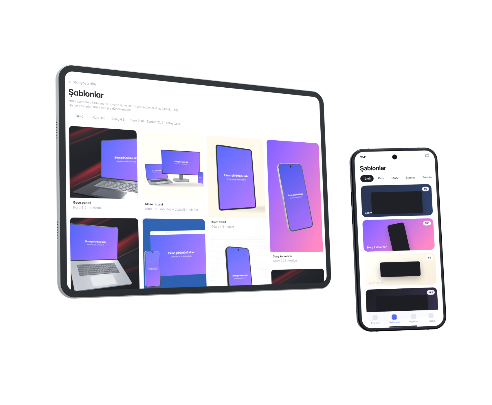
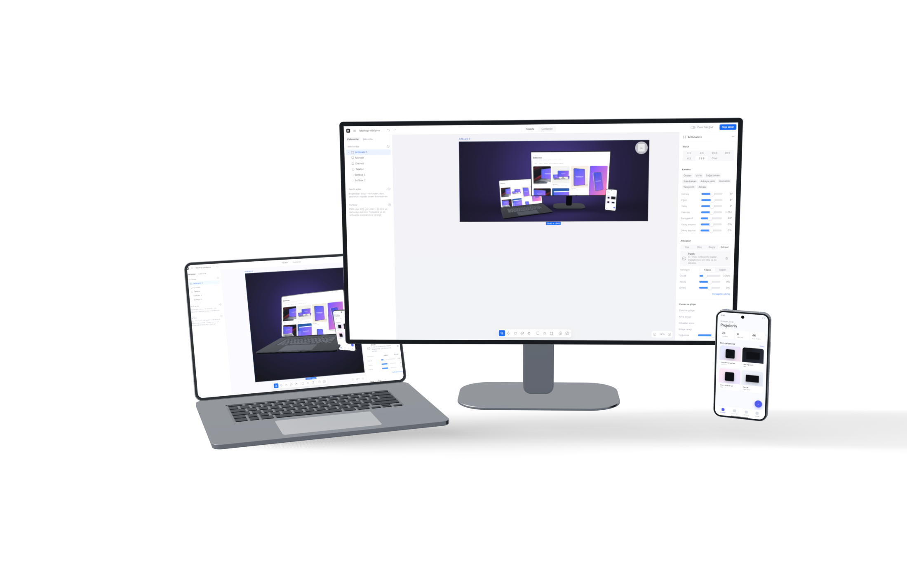
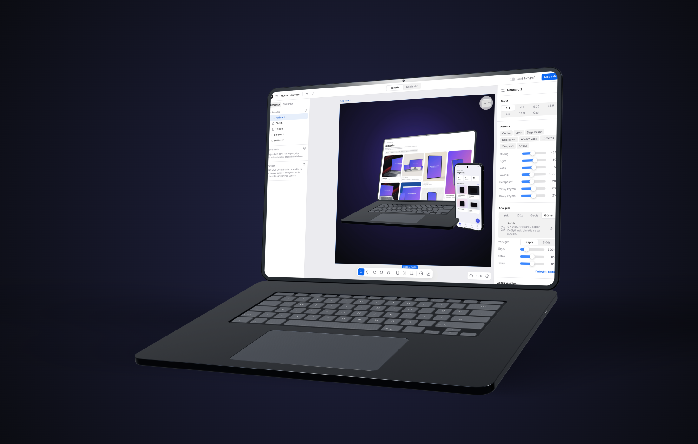
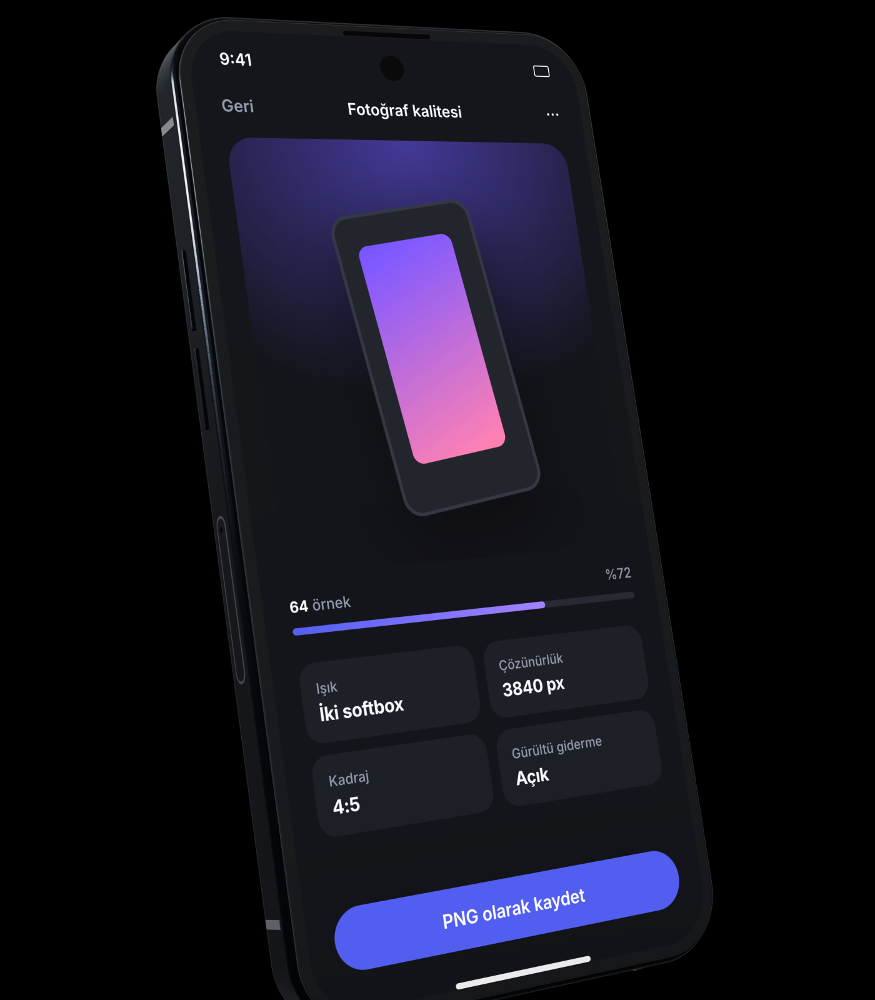
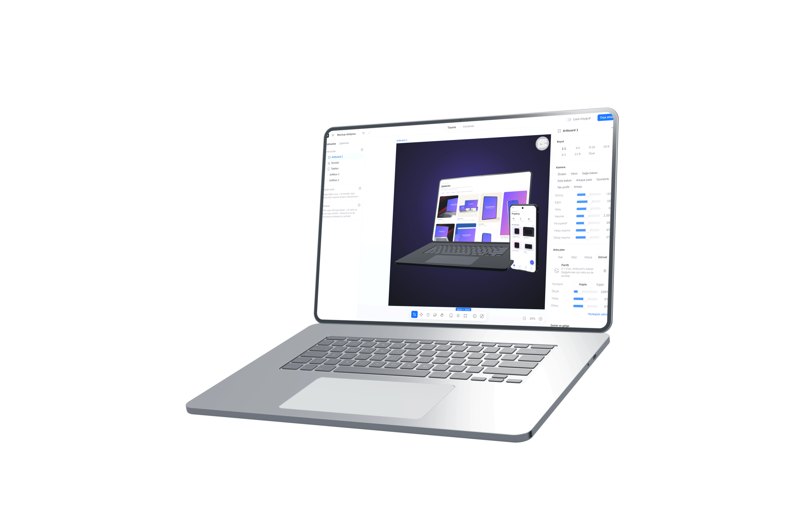

Ekran görüntünü yükle, cihazını seç, ışığını kur. Telefon, tablet, dizüstü ve monitör mockup'larını fotoğraf kalitesinde, istediğin açıdan ve 4K çözünürlükte tek araçtan al.
Ücretsiz başlaKaydol, ekran görüntünü sürükle bırak, hazır bir açı seç ve PNG olarak indir. Kurulum yok, eklenti yok; tarayıcında çalışır.

Cihazları aynı zemine diz, her birine kendi ekranını ver, kameranı çevir. 20 hazır şablon kare, story, banner ve sunum oranlarında seni bekliyor.

Adresi yaz, Vitrin siteyi her cihazın kendi ekran boyutunda tam sayfa çeker ve ekranlara yerleştirir. Uzun sayfalarda ekranı kaydır, istediğin kesiti göster.


Yol izlemeli render, gerçek yansımalar ve yumuşak gölgelerle stüdyo çekimi görünümü verir. Gürültü giderme otomatik; 3840 px çıktı saniyeler içinde hazır.
Örnekleri gör
Softbox, şemsiye, pencere ışığı ya da sert flaş. Işıkları haritada sürükle, gölgenin yumuşaklığını kaynak boyutuyla ayarla. Hazır kurulumlar tek tıkla.
KeşfetProjelerin tarayıcında, cihazların jenerik, çıktıların senin. Vitrin'i gönül rahatlığıyla ticari işlerde kullan.
Her değişiklik anında tarayıcına kaydedilir. Sekmeyi kapat, döndüğünde kaldığın yerden devam et; proje dosyasıyla başka bilgisayara taşı.
Cihaz modelleri jenerik, ortam ve ikonlar açık lisanslı. Çıktıların üzerinde tüm haklar sana ait.
Kurulum ve güncelleme derdi yok. Render kendi GPU'nda yapılır, görsellerin sunucuya gitmek zorunda değil.
Soru ve önerilerini e-postayla bize ulaştır; beta boyunca her geri bildirimi okuyoruz.
Hesap yok, kart yok. Stüdyoyu aç, tüm özellikleri kullan. Çalışman tarayıcında saklanır, istediğin an proje dosyası olarak indirirsin.
Aklına takılanları cevaplamak için buradayız.
Vitrin, tarayıcıda çalışan bir 3B cihaz mockup stüdyosudur. Ekran görüntünü ya da sitenin adresini verirsin; telefon, tablet, dizüstü ve monitör üzerinde, seçtiğin ışık ve açıyla gerçekçi bir görsel üretir. Tasarımcılar, pazarlama ekipleri ve uygulama geliştiriciler için yapıldı.
PNG ya da JPG olarak, şeffaf ya da renkli arka planla, 3840 px uzun kenara kadar. Birden fazla artboard'u ZIP olarak tek seferde indirebilir, Canlandır modunda MP4 video alabilirsin.
Hiçbirine. Tüm cihazlar jenerik tasarımdır; böylece ticari işlerde marka hakkı sorunu yaşamazsın. Belirli bir ürün görünümü istersen lisanslı çerçeve görselini "Kendi çerçeven" ile yükleyebilirsin.
Hızlı modda görsel anında hazırlanır. Fotoğraf modunda yol izleme ile gerçek yansımalar, yumuşak gölgeler ve ortam ışığı hesaplanır, ardından gürültü giderme uygulanır. 1080 px'te yaklaşık bir dakika sürer.
Beta'da hesap yok: projelerin ve görsellerin yalnızca kendi tarayıcında saklanır, istediğin an proje dosyası olarak indirirsin. Render işlemi de tarayıcında yapılır; görsellerin sunucuya gönderilmez. Yalnızca site yakalamada adres, sayfayı çekmek için sunucumuza gider.
Beta boyunca her şey ücretsiz. Ücretli planlar geldiğinde önceden duyuracağız; indirdiğin proje dosyaları ve görseller senin, hiçbiri kilitlenmez.
Daha fazla bilgi için destek merkezimize ulaşabilirsin.
